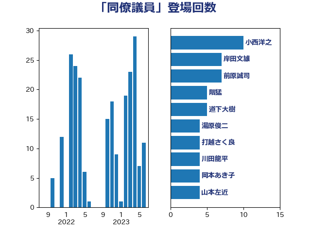

単語「同僚議員」

| 枝野幸男 | 立憲民主党 | 15 回 |
| 玉木雄一郎 | 国民民主党 | 11 回 |
| 小西洋之 | 立憲民主党 | 10 回 |
| 道下大樹 | 立憲民主党 | 8 回 |
| 吉川元 | 立憲民主党 | 7 回 |
| 岸田文雄 | 自由民主党 | 6 回 |
| 城井崇 | 立憲民主党 | 5 回 |
| 川田龍平 | 立憲民主党 | 5 回 |
| 井林辰憲 | 自由民主党 | 4 回 |
| 山本左近 | 自由民主党 | 4 回 |
| 櫻井周 | 立憲民主党 | 4 回 |
| 野田佳彦 | 立憲民主党 | 4 回 |
| 前原誠司 | 国民民主党 | 3 回 |
| 谷合正明 | 公明党 | 3 回 |
| 逢坂誠二 | 立憲民主党 | 3 回 |
| 伴野豊 | 立憲民主党 | 2 回 |
| 住吉寛紀 | 日本維新の会 | 2 回 |
| 大串博志 | 立憲民主党 | 2 回 |
| 大西健介 | 立憲民主党 | 2 回 |
| 安江伸夫 | 公明党 | 2 回 |
| 小林鷹之 | 自由民主党 | 2 回 |
| 小熊慎司 | 立憲民主党 | 2 回 |
| 小野泰輔 | 日本維新の会 | 2 回 |
| 山井和則 | 立憲民主党 | 2 回 |
| 岡本あき子 | 立憲民主党 | 2 回 |
| 有村治子 | 自由民主党 | 2 回 |
| 梅村みずほ | 日本維新の会 | 2 回 |
| 森山浩行 | 立憲民主党 | 2 回 |
| 江田憲司 | 立憲民主党 | 2 回 |
| 浅田均 | 日本維新の会 | 2 回 |
| 渡辺周 | 立憲民主党 | 2 回 |
| 篠原孝 | 立憲民主党 | 2 回 |
| 足立康史 | 日本維新の会 | 2 回 |
| 金子恵美 | 立憲民主党 | 2 回 |
| 長妻昭 | 立憲民主党 | 2 回 |
| 長浜博行 | 無所属 | 2 回 |
| 階猛 | 立憲民主党 | 2 回 |
| 下条みつ | 立憲民主党 | 1 回 |
| 世耕弘成 | 自由民主党 | 1 回 |
| 中島克仁 | 立憲民主党 | 1 回 |
| 丹羽秀樹 | 自由民主党 | 1 回 |
| 佐藤公治 | 立憲民主党 | 1 回 |
| 勝目康 | 自由民主党 | 1 回 |
| 古賀友一郎 | 自由民主党 | 1 回 |
| 和田政宗 | 自由民主党 | 1 回 |
| 国定勇人 | 自由民主党 | 1 回 |
| 堀井巌 | 自由民主党 | 1 回 |
| 堂故茂 | 自由民主党 | 1 回 |
| 塩田博昭 | 公明党 | 1 回 |
| 塩谷立 | 自由民主党 | 1 回 |
| 大島敦 | 立憲民主党 | 1 回 |
| 小川淳也 | 立憲民主党 | 1 回 |
| 小渕優子 | 自由民主党 | 1 回 |
| 山下貴司 | 自由民主党 | 1 回 |
| 山岡達丸 | 立憲民主党 | 1 回 |
| 山岸一生 | 立憲民主党 | 1 回 |
| 山本ともひろ | 自由民主党 | 1 回 |
| 岡本三成 | 公明党 | 1 回 |
| 岩屋毅 | 自由民主党 | 1 回 |
| 岸真紀子 | 立憲民主党 | 1 回 |
| 平木大作 | 公明党 | 1 回 |
| 後藤祐一 | 立憲民主党 | 1 回 |
| 日下正喜 | 公明党 | 1 回 |
| 杉本和巳 | 日本維新の会 | 1 回 |
| 松沢成文 | 日本維新の会 | 1 回 |
| 柳ヶ瀬裕文 | 日本維新の会 | 1 回 |
| 柿沢未途 | 無所属 | 1 回 |
| 橋本岳 | 自由民主党 | 1 回 |
| 池田佳隆 | 自由民主党 | 1 回 |
| 熊谷裕人 | 立憲民主党 | 1 回 |
| 牧義夫 | 立憲民主党 | 1 回 |
| 田名部匡代 | 立憲民主党 | 1 回 |
| 石井章 | 日本維新の会 | 1 回 |
| 石橋通宏 | 立憲民主党 | 1 回 |
| 神谷裕 | 立憲民主党 | 1 回 |
| 稲富修二 | 立憲民主党 | 1 回 |
| 空本誠喜 | 日本維新の会 | 1 回 |
| 細田健一 | 自由民主党 | 1 回 |
| 羽田次郎 | 立憲民主党 | 1 回 |
| 自見はなこ | 自由民主党 | 1 回 |
| 薗浦健太郎 | 自由民主党 | 1 回 |
| 藤川政人 | 自由民主党 | 1 回 |
| 角田秀穂 | 公明党 | 1 回 |
| 谷川とむ | 自由民主党 | 1 回 |
| 近藤和也 | 立憲民主党 | 1 回 |
| 近藤昭一 | 立憲民主党 | 1 回 |
| 進藤金日子 | 自由民主党 | 1 回 |
| 重徳和彦 | 立憲民主党 | 1 回 |
| 金城泰邦 | 公明党 | 1 回 |
| 青柳仁士 | 日本維新の会 | 1 回 |